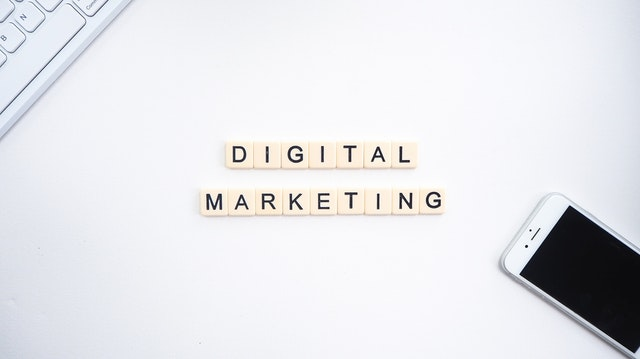

What is digital marketing (and how will it help your business to attract more customers and make more money)?
Written by Ntsikelelo Mnqokoyi, 7 November 2019
It is common knowledge that if a business is going to be successful then it will need an effective marketing strategy that will not only increase the number of people who know about your business, but will also increase the number of established customers who actually buy whatever it is that your business is offering.

There are traditional methods of marketing known by everyone such as radio/television advertisements, billboard advertising, flyers, catalogues and the list just goes on and on... These methods do work to some extent, however, there are two main problems that I have with which can prove to be very disastrous for any business.
- These traditional marketing methods are very expensive and...
- They do not provide business owners with any information that they need to know if the marketing strategy is working for sure.
Imagine spending hundreds of thousands of rands on billboards and tv advertisements and not even know if your marketing efforts are paying off or not. Many businesses worldwide have experienced this and it becomes too late to do something when they do eventually figure out that their marketing strategy is either reaching the wrong audience, or worse, is not engaging enough to entice the right audience to buy from their businesses.
It is my experience that digital marketing is the solution to these problems, but before I explain the reason why, let me first explain to you what digital marketing is.
What is digital marketing?
Digital marketing (also known as online or internet marketing) refers to the promotion of a business using the internet. There are many forms of digital marketing that exist to help businesses to promote their products/services such as...
- A business website
- E-mail newsletters
- Search engine optimization
- Search engine marketing
- Affiliate marketing
- Social media marketing etc...

I will upload more posts that will discuss these in detail within the near future so stay tuned to this blog. One of the best things about digital marketing is that it allows your business to connect with and sell to people all over the world which also makes it superior to traditional marketing methods which can only advertise to people of a local area.
How does digital marketing solve the two problems you mentioned earlier?
Let us recap the two main problems that I have with traditional methods of marketing...
- These traditional marketing methods are very expensive and...
- They do not provide business owners with any information needed to know if the marketing strategy is working for sure.
Traditional marketing is too expensive.
Imagine that your are the marketing director of "Company A" and you want to increase awareness of your business nation-wide by using traditional marketing. You would first need to hire and pay actors and a filming crew to shoot a tv commercial. You would then also need to pay someone to record an advertisement for radio too. Then you would also need to pay even more money to design and set up a network of billboards that will be erected around the country and finally, you would then need to print thousands of flyers or catalogues and pay a network of people to distribute them around the country for you.

That sounds like too much money to be paying for marketing that you could be using somehwere else to grow your business instead which can easily cost hundreds of thousands (if not millions) of rands. The problem with this is that most small businesses do not have a few hundred thousand rands lying around in their bank accounts just to spend on such marketing so does this mean that they cannot market themselves to large audiences? The answer to that is a resounding no infact, on the contrary, they can leverage a minimal amount (like a few hundred dollars) of money to reach even more people than those reached in the previous example even after "Company A" spends all that money for marketing as digital marketing gives businesses access to a globalwide network of potential customers.Digital marketing allows businesses to greatly reduce the costs of promoting their businesses which is why it is a more viable choice compared to traditional marketing.
You do not know how effective your marketing strategy really is with traditional marketing.

Imagine going through all the trouble to market your business like "Company A" but still not know how well your marketing efforts are doing so you end up asking yourself...
- "Did my advertisement reach the exact target audience that I was going for?"
- "Is my advertisement engaging enough to compel the potential customer to buy from my business?"
...and other questions simillar to this. The scary part of this is that you cannot really answer these questions if you used traditional marketing methods as there is no way to gauge the performance of your marketing strategy this way. Digital marketing becomes a better solution in this regard as it uses two special ways to make sure that your advertisements reach the right people and is doing its intended job (which is to compel potential customers to buy from your business) namely...
- Web analytics and...
- Targeted advertising.

Web analytics refers to the usage of data retrieved from every person that comes into contact with your business online (such as what that person was doing as they explored your business website). This allows business owners to use this information to create a better experience for your potential customers by tweaking your online marketing strategy to suit their needs. This makes it easier to compel a potential customer to buy from your business it has been enhanced according to the data retrieved from your potential customer to provide a better experience for him/her. This will allow your business to convert more potential customers who come into contact with your business into established customers who actually pay for your goods or services which equates to more money coming into your business.

Targeted advertising involves using digital marketing platforms (such as social media and search engines) to post advertisements of your business to people who are definately searching for what your business is offering online. 'And how do we know this for sure?', you may be asking yourself? Have you ever searched for something on Google only for you to see advertisements that are exactly related to whatever you were searching on Facebook or other platforms. That is targeted advertising at work right there which used the words you typed on Google to advertise relevant businesses to you and if this is possible for other companies, then it is definetely possible for your business too.
As you can see, digital marketing allows your business to be more effective at reaching the right potential customers and increase you company's revenue which is why most businesses have switched to digital marketing so why dont you do the same too?